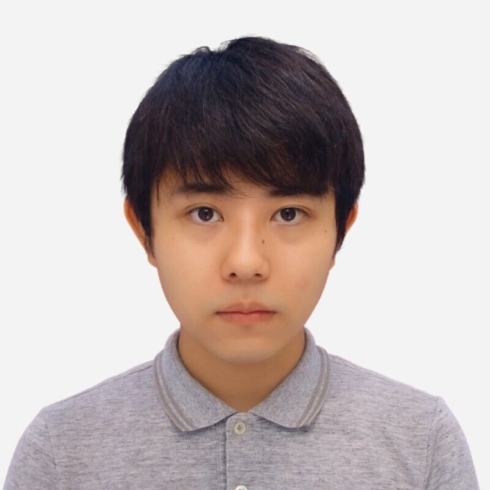

About Me

Yosuke Higuchi / 樋口 陽祐
3rd year Ph.D. student in Perceptual Computing Laboratory at Waseda University.
Education
Waseda University
Tokyo, Japan
Apr. 2021 - Mar. 2024
Ph.D. in Computer Science and Engineering
- Research Topic: End-to-end speech recognition
- Supervisor: Tetsunori Kobayashi, Tetsuji Ogawa
Apr. 2019 - Mar. 2021
M.E. in Computer Science and Engineering
- Research Topic: End-to-end speech recognition
- Supervisor: Tetsunori Kobayashi, Tetsuji Ogawa
Apr. 2015 - Mar. 2019
B.E. in Computer Science and Engineering (major), and
Intermedia Art and Science (minor)
- Research Topic: Zero-resource speech recognition
- Supervisor: Tetsunori Kobayashi, Tetsuji Ogawa, Naohiro Tawara
Research Interest
Automatic Speech Recognition
- End-to-End Speech Recognition
- Low-resource Speech Recognition
Experiences
Oct. 2022 - Jan. 2023
Google, NY, USA
- Research internship
- Worked on end-to-end speech recognition
- Mentor: Andrew Rosenberg, Bhuvana Ramabhadran
Mar. 2022 - June 2022
Carnegie Mellon University, PA, USA
- Visiting scholar
- Worked on end-to-end speech recognition
- Mentor: Shinji Watanabe
Oct. 2020 - Mar. 2021, Apr. 2021 - Dec. 2021
Mitsubishi Electric Research Laboratories, MA, USA
- Research internship, part-time researcher (remote)
- Worked on end-to-end speech recognition
- Mentor: Takaaki Hori, Niko Moritz, Jonathan Le Roux
Dec. 2019 - Mar. 2020
Johns Hopkins University, MD, USA
- Visiting scholar
- Worked on end-to-end speech recognition
- Mentor: Shinji Watanabe
Jun. 2019 - Oct. 2019
IBM Research AI, Tokyo, Japan
- Research internship
- Worked on speaker diarization
- Mentor: Masayuki Suzuki, Gakuto Kurata
Aug. 2018 - Sept. 2018
NTT Communication Science Laboratories, NTT Corporation, Kanagawa, Japan
- Research internship
- Worked on voice conversion
- Mentor: Hirokazu Kameoka
Sept. 2016 - Jun. 2017
InfoDeliver Corporation, Tokyo, Japan
- Part-time software engineer
- Worked on developing and maintaining web services and mobile apps
Publications
Preprint
- Yosuke Higuchi, Tetsuji Ogawa, Tetsunori Kobayashi, "Harnessing the Zero-Shot Power of Instruction-Tuned Large Language Model in End-to-End Speech Recognition," September 2023. [arXiv]
- Hirofumi Inaguma, Yosuke Higuchi, Kevin Duh, Tatsuya Kawahara, Shinji Watanabe, "Non-autoregressive End-to-end Speech Translation with Parallel Autoregressive Rescoring," September 2021. [arXiv]
Journal
- Yosuke Higuchi, Niko Moritz, Jonathan Le Roux, Takaaki Hori, "Momentum Pseudo-Labeling: Semi-Supervised ASR with Continuously Improving Pseudo-Labels," IEEE Journal of Selected Topics in Signal Processing, October 2022. [IEEE Xplore] [pdf]
International conference (peer-reviewed, first author)
- Yosuke Higuchi, Andrew Rosenberg, Yuan Wang, Murali Karthick Baskar, Bhuvana Ramabhadran, "Mask-Conformer: Augmenting Conformer with Mask-Predict Decoder," 2023 IEEE Automatic Speech Recognition and Understanding Workshop (ASRU), December 2023.
- Yosuke Higuchi, Tetsuji Ogawa, Tetsunori Kobayashi, Shinji Watanabe, "BECTRA: Transducer-based End-to-End ASR with BERT-Enhanced Encoder," 2023 IEEE International Conference on Acoustics, Speech and Signal Processing (ICASSP), June 2023. [arXiv] [IEEE Xplore]
- Yosuke Higuchi, Tetsuji Ogawa, Tetsunori Kobayashi, Shinji Watanabe, "InterMPL: Momentum Pseudo-Labeling with Intermediate CTC Loss," 2023 IEEE International Conference on Acoustics, Speech and Signal Processing (ICASSP), June 2023. [arXiv] [IEEE Xplore]
- Yosuke Higuchi, Brian Yan, Siddhant Arora, Tetsuji Ogawa, Tetsunori Kobayashi, Shinji Watanabe, "BERT Meets CTC: New Formulation of End-to-End Speech Recognition with Pre-trained Masked Language Model," Findings of the Association for Computational Linguistics: EMNLP 2022, December 2022. [arXiv] [ACL Anthology]
- Yosuke Higuchi, Keita Karube, Tetsuji Ogawa, Tetsunori Kobayashi, "Hierarchical Conditional End-to-End ASR with CTC and Multi-Granular Subword Units," 2022 IEEE International Conference on Acoustics, Speech and Signal Processing (ICASSP), May 2022. [arXiv] [IEEE Xplore]
- Yosuke Higuchi, Niko Moritz, Jonathan Le Roux, Takaaki Hori, "Advancing Momentum Pseudo-Labeling with Conformer and Initialization Strategy," 2022 IEEE International Conference on Acoustics, Speech and Signal Processing (ICASSP), May 2022. [arXiv] [IEEE Xplore] [pdf]
- Yosuke Higuchi, Nanxin Chen, Yuya Fujita, Hirofumi Inaguma, Tatsuya Komatsu, Jaesong Lee, Jumon Nozaki, Tianzi Wang, Shinji Watanabe, "A Comparative Study on Non-Autoregressive Modelings for Speech-to-Text Generation," 2021 IEEE Automatic Speech Recognition and Understanding Workshop (ASRU), December 2021. [arXiv] [IEEE Xplore]
- Yosuke Higuchi, Niko Moritz, Jonathan Le Roux, Takaaki Hori, "Momentum Pseudo-Labeling for Semi-Supervised Speech Recognition," 22nd Annual Conference of International Speech Communication Association (INTERSPEECH), August 2021. [arXiv] [ISCA archive] [pdf]
- Yosuke Higuchi, Shinji Watanabe, Hirofumi Inaguma, Tetsuji Ogawa, Tetsunori Kobayashi, "Improved Mask-CTC for Non-Autoregressive End-to-End ASR," 2021 IEEE International Conference on Acoustics, Speech and Signal Processing (ICASSP), June 2021. [arXiv] [IEEE Xplore]
- Yosuke Higuchi, Naohiro Tawara, Atsunori Ogawa, Tomoharu Iwata, Tetsunori Kobayashi, Tetsuji Ogawa, "Noise-robust Attention Learning for End-to-End Speech Recognition," 28th European Signal Processing Conference (EUSIPCO), January 2021. [pdf] [IEEE Xplore]
- Yosuke Higuchi, Shinji Watanabe, Nanxin Chen, Tetsuji Ogawa, Tetsunori Kobayashi, "Mask CTC: Non-Autoregressive End-to-End ASR with CTC and Mask Predict," 21st Annual Conference of International Speech Communication Association (INTERSPEECH), October 2020. [arXiv] [ISCA archive]
- Yosuke Higuchi, Masayuki Suzuki, Gakuto Kurata, "Speaker Embeddings Incorporating Acoustic Conditions for Diarization," 2020 IEEE International Conference on Acoustics, Speech and Signal Processing (ICASSP), May 2020. [IEEE Xplore]
- Yosuke Higuchi, Naohiro Tawara, Tetsunori Kobayashi, Tetsuji Ogawa, "Speaker Adversarial Training of DPGMM-based Feature Extractor for Zero-Resource Languages," 20th Annual Conference of International Speech Communication Association (INTERSPEECH), September 2019. [ISCA archive]
International conference (peer-reviewed, co-author)
- Tomoki Ariga, Yosuke Higuchi, Kazutoshi Hayasaka, Naoki Okamoto, and Tetsuji Ogawa "Parody Detection Using Source-Target Attention With Teacher-Forced Lyrics," 2024 IEEE International Conference on Acoustics, Speech and Signal Processing (ICASSP), April 2024. (to appear)
- Masao Someki, Nicholas Eng, Yosuke Higuchi, Shinji Watanabe, "Segment-Level Vectorized Beam Search Based on Partially Autoregressive Inference," 2023 IEEE Automatic Speech Recognition and Understanding Workshop (ASRU), December 2023. [arxiv]
- Tomoki Ariga, Yosuke Higuchi, Mitsunori Kanno, Rie Shigyo, Takato Mizuguchi, Naoki Okamoto, Tetsuji Ogawa, "Spotting Parodies: Detecting Alignment Collapse Between Lyrics and Singing Voice," 31st European Signal Processing Conference (EUSIPCO), September 2023. [pdf] [IEEE Xplore]
- Huaibo Zhao, Yosuke Higuchi, Yusuke Kida, Tetsuji Ogawa, Tetsunori Kobayashi, "Mask-CTC-based Encoder Pre-training for Streaming End-to-End Speech Recognition," 31st European Signal Processing Conference (EUSIPCO), September 2023. [arxiv] [pdf] [IEEE Xplore]
- Brian Yan, Siddharth Dalmia, Yosuke Higuchi, Graham Neubig, Florian Metze, Alan W Black, Shinji Watanabe, "CTC Alignments Improve Autoregressive Translation," 17th Conference of the European Chapter of the Association for Computational Linguistics (EACL), May 2023. [arXiv] [ACL Anthology]
- Yifan Peng*, Siddhant Arora*, Yosuke Higuchi, Yushi Ueda, Sujay Kumar, Karthik Ganesan, Siddharth Dalmia, Xuankai Chang, Shinji Watanabe, "A Study on the Integration of Pre-Trained SSL, ASR, LM and SLU Models for Spoken Language Understanding," 2022 IEEE Spoken Language Technology Workshop (SLT), January 2023. [arXiv] [IEEE Xplore]
- Masao Someki, Yosuke Higuchi, Tomoki Hayashi, Shinji Watanabe, "ESPnet-ONNX: Bridging a Gap Between Research and Production," Asia-Pacific Signal and Information Processing Association Annual Summit and Conference 2022 (APSIPA), November 2022. [arXiv] [IEEE Xplore]
- Keqi Deng*, Zehui Yang*, Shinji Watanabe, Yosuke Higuchi, Gaofeng Cheng, Pengyuan Zhang, "Improving Non-Autoregressive End-to-End Speech Recognition with Pre-trained Acoustic and Language Models," 2022 IEEE International Conference on Acoustics, Speech and Signal Processing (ICASSP), May 2022. [arXiv] [IEEE Xplore]
- Huaibo Zhao, Yosuke Higuchi, Tetsuji Ogawa, Tetsunori Kobayashi, "An Investigation of Enhancing CTC Model for Triggered Attention-based Streaming ASR," Asia-Pacific Signal and Information Processing Association Annual Summit and Conference 2021 (APSIPA), December 2021. [arXiv] [IEEE Xplore]
- Shinji Watanabe, Florian Boyer, Xuankai Chang, Pengcheng Guo, Tomoki Hayashi, Yosuke Higuchi, Takaaki Hori, Wen-Chin Huang, Hirofumi Inaguma, Naoyuki Kamo, Shigeki Karita, Chenda Li, Jing Shi, Aswin Shanmugam Subramanian, Wangyou Zhang, "The 2020 ESPnet Update: New Features, Broadened Applications, Performance Improvements, and Future Plans," 2021 IEEE Data Science & Learning Workshop (DSLW), June 2021. [arXiv] [IEEE Xplore]
- Pengcheng Guo, Florian Boyer, Xuankai Chang, Tomoki Hayashi, Yosuke Higuchi, Hirofumi Inaguma, Naoyuki Kamo, Chenda Li, Daniel Garcia-Romero, Jiatong Shi, Jing Shi, Shinji Watanabe, Kun Wei, Wangyou Zhang, Yuekai Zhang, "Recent Developments on ESPnet Toolkit Boosted by Conformer," 2021 IEEE International Conference on Acoustics, Speech and Signal Processing (ICASSP), June 2021. [arXiv] [IEEE Xplore]
- Hirofumi Inaguma, Yosuke Higuchi, Kevin Duh, Tatsuya Kawahara, Shinji Watanabe, "Orthros: Non-autoregressive End-to-end Speech Translation with Dual-decoder," 2021 IEEE International Conference on Acoustics, Speech and Signal Processing (ICASSP), June 2021. [arXiv] [IEEE Xplore]
Domestic conference / workshop (in Japanese, first author)
- 樋口陽祐，小川哲司，小林哲則，渡部晋治，"事前学習済みマスク言語モデルを用いたEnd-to-End音声認識，" 日本音響学会研究発表会講演論文集 (ASJ)，September 2023.
- 樋口陽祐，軽部敬太，小川哲司，小林哲則，"粒度の異なるサブワード単位に基づく階層的条件付きEnd-to-End音声認識，" 日本音響学会研究発表会講演論文集 (ASJ)，March 2022.
- 樋口陽祐，Moritz Niko，Le Roux Jonathan，堀貴明，"Momentum Pseudo-Labelingによる半教師ありEnd-to-End音声認識，" 日本音響学会研究発表会講演論文集 (ASJ)，March 2022.
- 樋口陽祐，軽部敬太，小川哲司，小林哲則，"End-to-End音声認識のための粒度の異なるサブワード単位に基づく階層的な条件づけ，" 情報処理学会研究報告 (SLP)，December 2021.
- 樋口陽祐，渡部晋治，稲熊寛文，小川哲司，小林哲則，"CTCとマスク推定に基づく推論速度の速いEnd-to-End音声認識，" 電子情報通信学会技術研究報告 (SP)，December 2020. 《音声研究会研究奨励賞》
- 樋口陽祐，渡部晋治，Chen Nanxin，小川哲司，小林哲則，"Mask CTC: CTCとマスク推定に基づいた非自己回帰的なEnd-to-End音声認識，" 日本音響学会研究発表会講演論文集 (ASJ)，September 2020. 《学生優秀発表賞》
- 樋口陽祐，鈴木雅之，倉田岳人，"ダイアライゼーションのための音響的環境を考慮した話者エンベディング，" 日本音響学会研究発表会講演論文集 (ASJ)，September 2020.
- 樋口陽祐，俵直弘，小川厚徳，岩田具治，小林 哲則，小川哲司，"Attentionに関する損失を利用したノイズに頑健なEnd-to-End音声認識，" 日本音響学会研究発表会講演論文集 (ASJ)， March 2020.
- 樋口陽祐，俵直弘，小林哲則，小川哲司，"DPGMMと敵対的学習に基づく話者の違いに頑健な特徴抽出とゼロリソース音声認識での評価，" 情報処理学会研究報告 (SLP)，July 2019. 《Yahoo! JAPAN賞》《山下記念研究賞》
- 樋口陽祐，俵直弘，小川哲司，小林哲則，"ゼロリソース言語音声認識のための発話者の違いに頑健な特徴抽出，" 日本音響学会研究発表会講演論文集 (ASJ)，March 2019.
Domestic conference / workshop (in Japanese, co-author)
- 楠奈穂美，樋口陽祐，久原卓，小川哲司，小林哲則，"再帰的フィードバックを用いた階層的マルチタスク学習によるEnd-to-End音声認識，" 日本音響学会研究発表会講演論文集 (ASJ)，March 2024.
- 牛尾貴志，樋口陽祐，久原卓，藤原晴雄，加藤博司，"事前学習済み音声認識モデルを用いた笑い声検出，" 言語・音声理解と対話処理研究会 (SLUD)，September 2023.
- 当間佐耶佳，有賀智輝，樋口陽祐，早坂一寿，岡本直紀，小川哲司，"深層話者埋め込みを用いた歌唱者の照合に関する検討，" 日本音響学会研究発表会講演論文集 (ASJ)，September 2023.
- 有賀智輝，樋口陽祐，早坂一寿，岡本直紀，小林哲則，小川哲司，"Teacher-Forcingにより歌詞を与えた際のAttentionの崩れに着目した替え歌検知，" 日本音響学会研究発表会講演論文集 (ASJ)，September 2023.
- 有賀智輝，樋口陽祐，菅野光則，執行里恵，水口天都，岡本直紀，小川哲司，"歌詞と歌唱音声のアライメント崩れに基づく替え歌検知，" 電子情報通信学会技術研究報告 (SP)，June 2023.
- 趙懐博，樋口陽祐，木田祐介，小川哲司，小林哲則，"Transducer型ストリーミング音声認識におけるMask-CTCを用いた事前学習，" 情報処理学会研究報告 (SLP)，June 2022. 《山下記念研究賞》
- 趙懐博，樋口陽祐，小川哲司，小林哲則，"Triggered attention型ストリーミング音声認識におけるMask-CTCを用いた事前学習，" 情報処理学会研究報告 (SLP)，October 2021.
Awards & Grants
-
December 2023Best Reviewer Awardfrom IEEE ASRU 2023
-
September 2021ISS Young Researcher's Award in Speech Fieldfrom the Institute of Electronics, Information and Communication Engineers (IEICE)
-
November 2020Best Student Presentation Awardfrom the Acoustical Society of Japan (ASJ)
-
August 2020Yamashita SIG Research Awardfrom Information Processing Society of Japan (IPSJ)
-
January 2020Yahoo! JAPAN Awardfrom Information Processing Society of Japan (IPSJ) SIG-SLP
Awards
-
March 2022 - June 2022Super Global University (Visiting to Carnegie Mellon University)from ICT & Robotics, Waseda University
-
October 2021 - March 2024ACT-X Frontier of mathematics and information sciencefrom Japan Science and Technology Agency (JST)
-
April 2021 - March 2024Research Fellowship for Young Scientists (DC1)from Japan Society for the Promotion of Science (JSPS)
-
December 2019 - March 2020Super Global University (Visiting to Johns Hopking University)from ICT & Robotics, Waseda University
-
April 2019 - March 2021Repayment Exemption for Graduate Students with Excellent Achievements (Type I; full-exemption)from Japan Student Services Organization (JASSO)
Grants
Contact
Address
Perceptual Computing Lab.
Room 40-701 27 Waseda-machi
Shinjuku-ku, Tokyo 162-0042, Japan
Room 40-701 27 Waseda-machi
Shinjuku-ku, Tokyo 162-0042, Japan
higuchi[at]pcl.cs.waseda.ac.jp